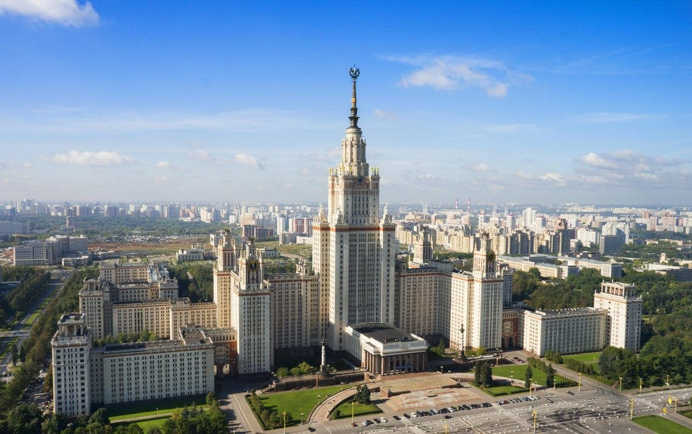
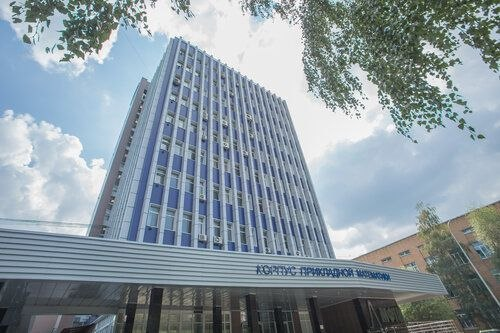
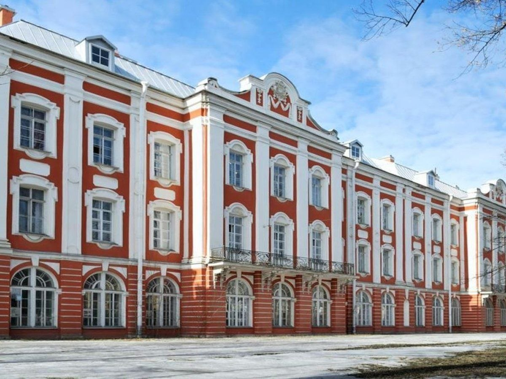
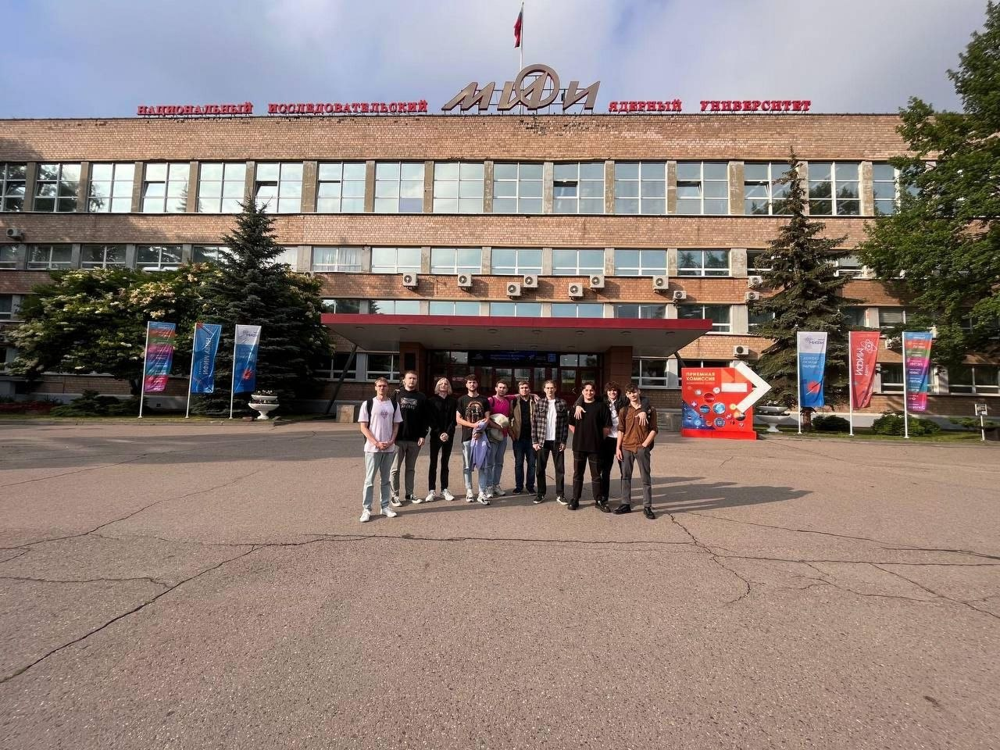
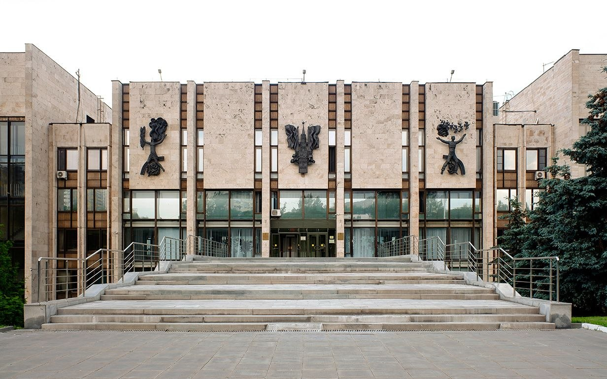
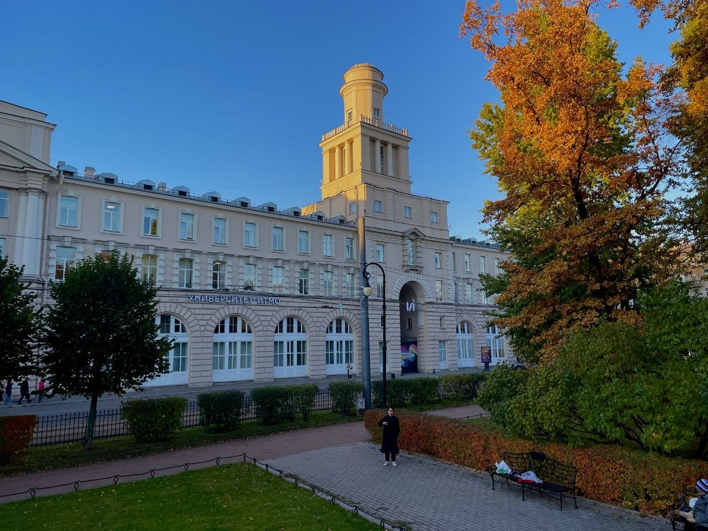
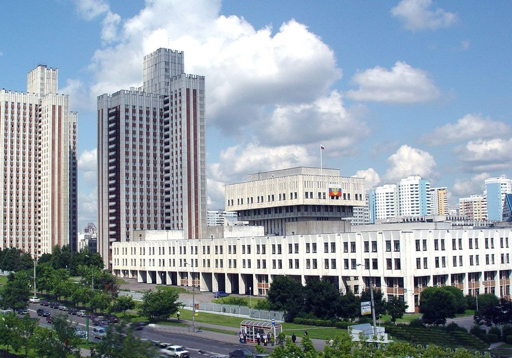
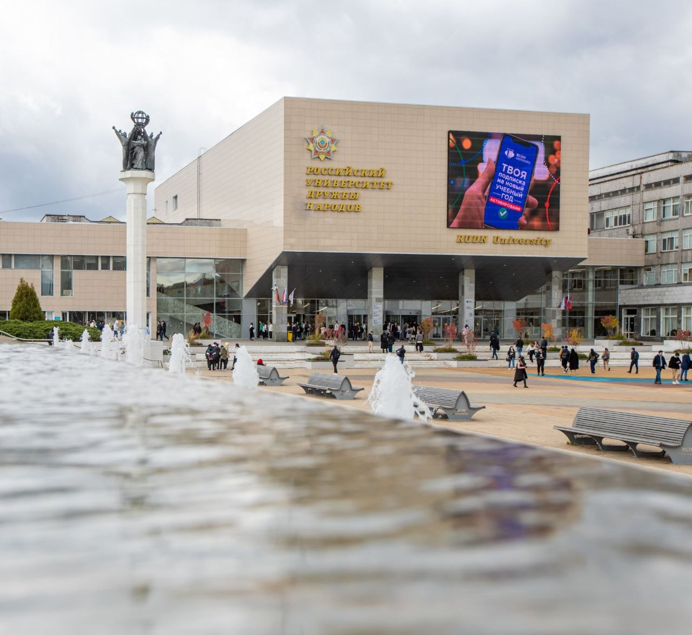
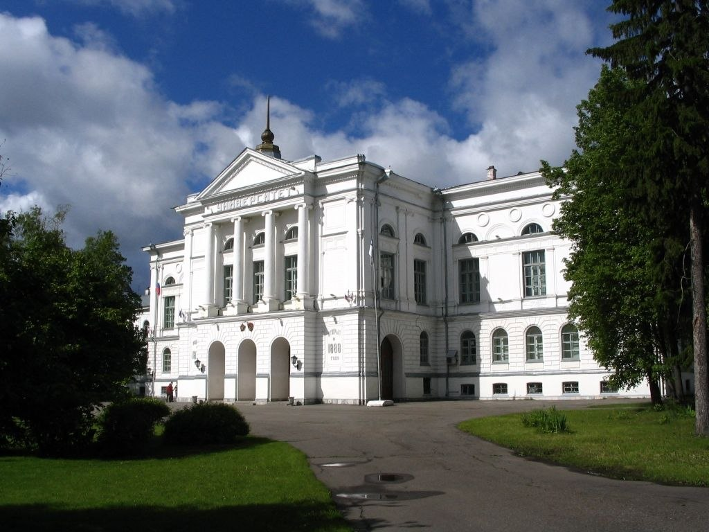
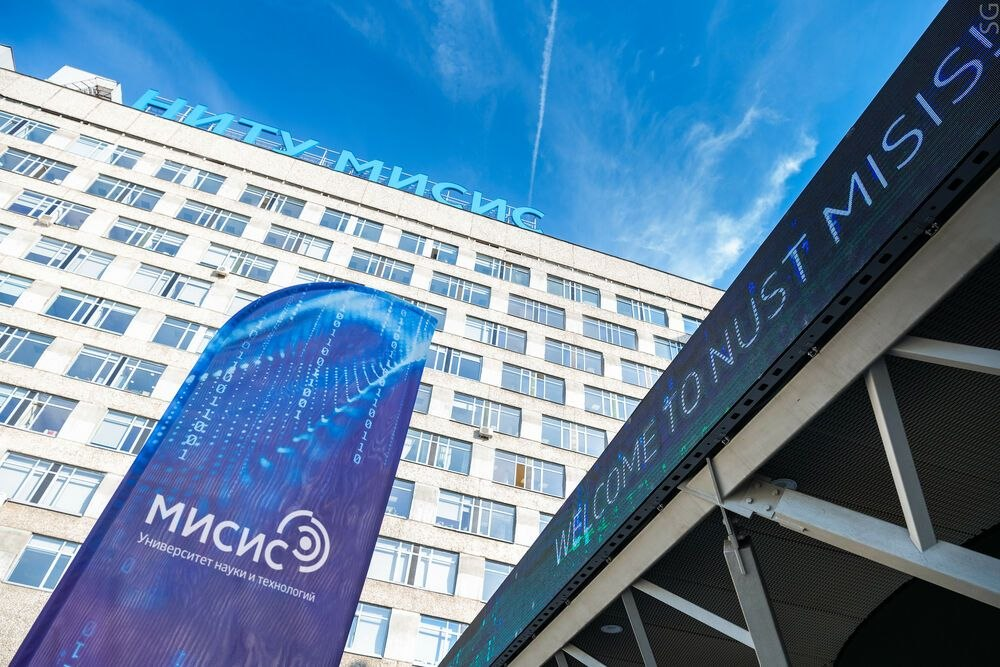

Выбор пути
Загрузка вопроса...
Твоя профессия: ...
Описание результата...
ТОП-10 востребованных профессий

1. AI-инженер
Специалист, который обучает нейросети, создает алгоритмы машинного обучения и развивает искусственный интеллект. Эта профессия находится на пике популярности.

2. Специалист по кибербезопасности
Защищает данные компаний и обычных пользователей от хакерских атак. С развитием интернета спрос на таких специалистов только растет.
3. Биоинформатик
Специалист на стыке биологии и IT. Занимается анализом данных для создания новых лекарств и изучения генетики.
4. Клинический психолог (и нейрокоуч)
Помогает людям адаптироваться к быстрому темпу жизни, лечит расстройства и помогает развивать способности мозга.
5. Логопед-дефектолог (Нейрологопед)
Помогает детям и взрослым преодолеть нарушения речи, письма и глотания. Работает не только со звуками, но и с развитием зон мозга, ответственных за коммуникацию.

6. Data Scientist (Архитектор данных)
Извлекает скрытые смыслы из огромных массивов информации, чтобы предсказывать тренды и поведение клиентов.
7. Разработчик образовательных траекторий (Тьютор)
Личный наставник, который помогает составить план обучения на годы вперед. Он подбирает курсы, книги и практики под конкретные цели человека, учитывая его таланты.

8. Цифровой лингвист
Именно эти люди учат нейросети понимать человеческий язык, нюансы иронии, сленг и эмоции. Они работают на стыке филологии и IT.
9. Эко-аналитик
Переводит компании на «зеленые» рельсы: минимизирует вред экологии и внедряет циклическую экономику (переработку).

10. Медиатор социальных конфликтов
Специалист, который помогает решать споры между разными группами людей (например, жителями района и застройщиками или внутри крупных корпораций) без суда.
ТОП-15 университетов России

1. МГУ им. М.В. Ломоносова (Москва)
Главный вуз страны. Предлагает фундаментальное образование по огромному количеству направлений: от мехмата до журналистики.
2. НИУ ВШЭ (Москва)
Один из самых современных вузов России. Славится сильными программами по экономике, IT, дизайну и социальным наукам.

3. МФТИ (Долгопрудный)
Лучший выбор для тех, кто хочет связать свою жизнь с физикой, математикой и передовыми IT-разработками.

4. СПбГУ (Санкт-Петербург)
Петербургская школа психологии считается классической и одной из самых глубоких в России. Идеально, если тебе интересна научная деятельность, исследования мозга и поведения.
5. МГТУ им. Н.Э. Баумана (Москва)
«Школа инженеров». Здесь учат проектировать всё: от роботов до ракет. Очень сильная практическая подготовка и дисциплина.

6. НИЯУ МИФИ (Москва)
Ядерные технологии и физика высоких энергий. Вуз тесно связан с «Росатомом». Также здесь одна из сильнейших школ информационной безопасности в стране.

7. МГИМО МИД России (Москва)
Главный вуз для будущих дипломатов. Упор на иностранные языки (более 50 языков на выбор) и международные отношения. Очень сильное сообщество выпускников.

8. Университет ИТМО (Санкт-Петербург)
"Первый неклассический". Лидер в программировании (многократные чемпионы мира) и робототехнике. Вуз с атмосферой ИТ-стартапа.

9. РАНХиГС (Москва)
Кузница управленческих кадров. Если цель — государственное управление, крупный менеджмент или психология лидерства, то это лучший выбор.
10. УрФУ им. Б.Н. Ельцина (Екатеринбург)
Огромный образовательный хаб прямо у тебя под боком. Плюс в том, что здесь сильное ИТ-сообщество и хорошие программы по психологии. Отличный вариант, если хочешь совмещать учебу с участием в крупных региональных проектах.

11. РУДН (Москва)
Самый многонациональный. Известен своей медицинской школой и обучением иностранным языкам. Дает возможность завести контакты по всему миру.
12. Первый МГМУ им. И.М. Сеченова (Москва)
Флагман медицинского образования. Лучшее оборудование для будущих врачей и клинических психологов. Огромный упор на биомедицинские технологии.

13. ТГУ (Томск)
Один из лучших исследовательских центров в Сибири. Сильные факультеты биологии, психологии и филологии. Очень ценится в научной среде.

14. НИТУ МИСИС (Москва)
Лидер в науке о материалах и металлургии. Сейчас активно развивает направления ИТ, квантовых технологий и промышленного дизайна.
15. КФУ (Казань)
Огромный университет с сильной базой в педагогике и биомедицине. Входит в число ведущих исследовательских центров страны с очень красивым кампусом.
Что учитывать при выборе профессии?
1. Личные интересы и склонности
Профессия должна быть вам интересна. Подумайте, чем вы готовы заниматься даже в свободное время: работать с текстами, решать сложные задачи, общаться с людьми, создавать что-то руками или заниматься творчеством. Интерес — это главный источник мотивации, когда первоначальный энтузиазм угаснет.
2. Способности и таланты
Важно честно оценить свои сильные стороны. Если вам легко даются точные науки, стоит присмотреться к инженерии или IT; если вы обладаете эмпатией и умеете слушать — к психологии или медицине. Опора на врожденные таланты поможет быстрее стать востребованным специалистом.
3. Востребованность на рынке труда
Изучите, какие специалисты будут нужны через 5–10 лет. Мир быстро меняется: некоторые профессии исчезают из-за автоматизации, а другие (например, в сфере биомедицины или искусственного интеллекта) только набирают обороты. Выбирайте направление с потенциалом роста.
4. Уровень заработной платы
Деньги не должны быть единственным фактором, но важно понимать финансовые перспективы. Ознакомьтесь со средними зарплатами в выбранном регионе и узнайте, каков «потолок» доходов у топовых специалистов в этой нише. Это поможет соотнести будущую работу с вашими жизненными планами.
5. Условия и образ жизни
Разные профессии диктуют разный ритм жизни. Готовы ли вы к ненормированному графику, частым командировкам или работе на ногах? Или вам ближе офисная стабильность и возможность удаленной работы из дома? Несоответствие условий труда вашему темпераменту может привести к быстрому выгоранию.
6. Возможности для обучения и развития
Профессия не должна быть «тупиковой». Выбирайте сферу, где есть понятная лестница карьерного роста или возможность постоянно изучать новое. В современном мире концепция «обучения через всю жизнь» (lifelong learning) становится обязательной для успеха.
7. Социальная значимость и ценности
Для многих важно чувствовать, что их работа приносит пользу обществу. Подумайте, какие ценности вам близки: помощь людям, защита экологии, развитие технологий или сохранение культуры. Работа, которая совпадает с вашим мировоззрением, дает глубокое чувство удовлетворения.
💡 Совет
Попробуйте методику Икигай — это поиск точки пересечения того, что вы любите, что вы умеете, за что платят деньги и что нужно миру.